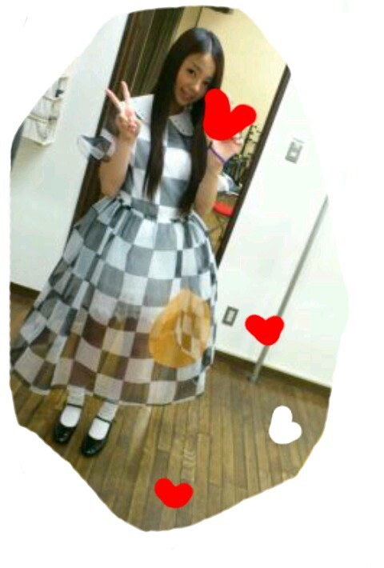

| 2012/04 19 Thu | 川村真洋 質問返し,3つ目☆ろってぃ ー♪ |
おいでジャンプーの
衣装だぁよ・ω・)
まひろのカラーは
オレンジっ))☆

■福山雅治さんの
『milktea』聴いたことある？
□ありますよん*・ω
改めてさっき
歌詞ちゃんと聴いてみました♪
嬉しい、ありがとうございます〃ω〃
4/6
■これから先、歌やダンス以外で
やってみたいことってありますか？
□サーフィンっ☆,*゜
あと、イルカと一緒に
泳ぎたいっ＾＾
■逆にこれだけは無理ってのは
ありますか？
□生きたままの幼虫を
食べることかな、、。(*_*)
■ろってぃーって結構
ストイックやったりするのかな？
□どうなんだろう？
自分ではよく分からんけど、
たまに人に言われます^_^
■関西はマックと今も言わないの？
□マックでも普通に通じるけど
関西人はマクドです(*^^*)
■スケボーとかできる？
□小学生の頃
一時期スケボーで遊んでましたっ☆
できるぅ？って言われたら
うまくすべれないから
できないかなっ>ω<笑
■半袖は早すぎちゃう？
□半袖は着るけど上から
長袖はおってるさω・〃
■大阪でライブやってたり
したの？
□ちょっとねω
ん〜 ライブハウスは7回さっω/
■ダイエット頑張ってるの？
□おんっ♪
目標まで達したらblog書くねω・#
■アイドルの曲は好き？
□好きだよ^^
■カップリング曲、
ろってぃーのソロ入れるべき
ぢゃない？
□ありがとうございます(⌒‐⌒)
そんなこと思ってくれてるの
嬉しいお気持ち。ω
■全握で皆に笑顔あげてきた？
□ばっちりさっ(^o^)v
だけど、まひろが皆様から
頂きましたーーっ!!☆
4/8
■ろってぃーTシャツ
気に入ってくれた？
□本気でめっちゃ
嬉しかった＼(^-^)／
ありがとうございます♪
■トマト推しだけど
またコメントしていいかな？
□いっぱいいっぱい
してください=・ω・=
まひろのこと
2推しになってほしいなっ〃ω〃？
■大阪のオススメお食事
スポットは？
□通天閣周辺に行って
串屋とかがいいさっω・!
色んな串があるさω・/
あと、たこ焼屋で『風風』
と言うチェーン店が
あるんですけど、
そこの唐揚げがめっちゃ
美味しいです(o・〜・o)
さゆりんも納得です♪
4/10
■レコーディングは順調？
□はいっ♪
無事全部終わりましたっ＾＾
■大阪桐蔭よく甲子園
出てんかなぁ？
□大阪は最近だと
とういん☆とりせいしゃ★が
常連校です♪
昔は、上宮がよく甲子園に
行ってましまω
もとき選手は上宮出身だω・
■学校クラス変えしたの？
□しました^^
せいらと同じクラスなりました♪
■猫舌？
□猫舌ですω
しょっちゅうやけど
しちゃう(ToT)
■野球とサッカー
どっちの方が好き？
□えーっ どうだろ^ω^？
自分がやるぶんには
サッカーかなぁぁ＾ω＾
まひろが野球やったら
全然打てないんちゃないかとω))
■靴は何足もってますか？
□靴はねえ、
いっぱい持ってる方だと
思いますω・`
今東京のお家にあるのだけで
無駄に25足ありました...(^-^;
よく履く靴は4つ位に
しぼられちゃうけどね(^.^)
■歌やダンスって普段から
練習したりしるんかな？
□ダンスレッスンやボイトレに
通ったりできないから
歌は、お風呂の中やカラオケ
で歌ったりします♪
■ポジションはどこなの？
□ピッチャーです＾＾
■セカンドのアンダーの曲は
どんな感じ？
かっこいい？
□どうだろーねー=^ω^=
楽しみにしてーてねっ♪
■ディズニーで好きな
アトラクションは？
□何だっけなあ、
あのエレベーターのんよっ^^笑
でも ディズニーは本当に
ただ乗ってゆったりしてると
夢の国に居る様な気持ちに
してくれる(⌒‐⌒)
全部好きω
■まひろちゃんと
同じ年なんだけど
何て呼べばいいかなぁ？
□まひろ とか ろってぃー
でいいよっ(*^^*)
ありがとっ♪